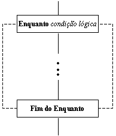
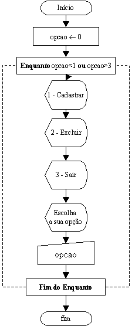

Exemplos Práticos de Construções de Lógicas e Fluxogramas
Estrutura de Repetição do tipo "Enquanto"
As estruturas do tipo "Para" são muito úteis quando temos um número definido de repetições, porém se quisermos repetir algum trecho da lógica por um tempo variável de vezes ela não nos servirá; é nesse contexto que introduzimos as estruturas "Enquanto". Repetições indefinidas de trechos surgem, por exemplo, quando queremos manter a exibição de um menu de opções enquanto não for digitada uma entrada válida.
Seu aspecto geral é:

Observe que é parecida com a estrutura do "Para" e da mesma maneira poderá ser encadeada com o uso de outras estruturas "Enquanto", ou ainda encadeamentos combinados das duas, porém jamais poderá haver cruzamento dos seus laços(como observado anteriormente).
Exemplo do Uso do "Enquanto"
Exibir um menu de opções para o usuário que tenha as opções:
1 - Cadastrar
2 - Excluir
3 - Sair
Caso o usuário digite um valor menor que 1 ou maior que 3 o menu deverá continuar sendo exibido, caso contrário ele deverá encerrar o programa.

Explicação:
Observe que a variável que guardará a resposta do usurário foi chamada de "opcao", ela é iniciada com o valor zero(apesar dos compiladores iniciarem todas as variáveis com conteúdo zero é bom hábito do programador iniciar suas variáveis, mesmo quando o valor inicial for zero), o trecho entre o "enquanto" e o "fim do enquanto" será repetido até que o usuário entre um dos valores que permitem a saída do laço(valore 1, 2 ou 3).

| Página Anterior | Próxima Página |